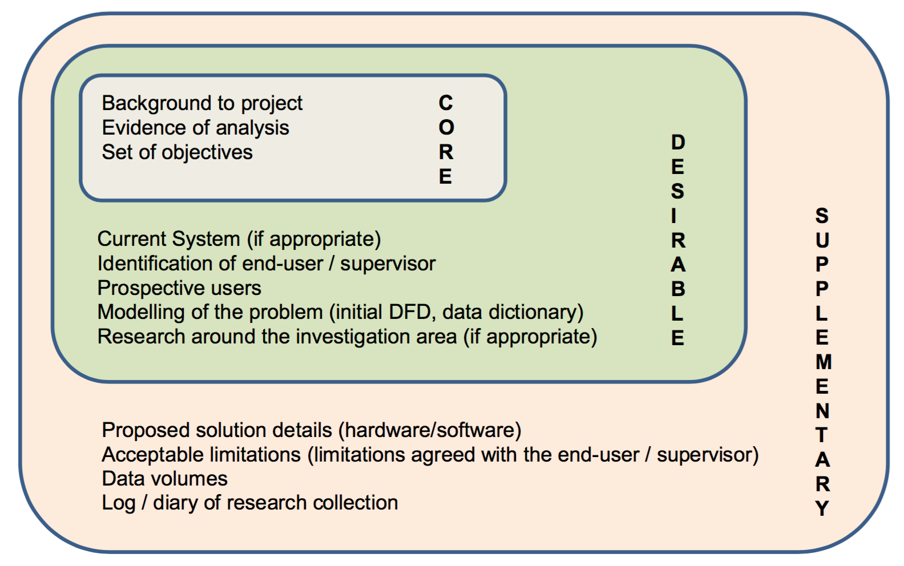

AQA A NEA Analysis Guideline
Table of Contents
1 Expectations and Marking Scheme
Expectations
You are expected to:- use a range of appropriate methods and sources to research and investigate the problem, including websites, existing software, books, interviews, questionnaires, prototyping.Relevant and genuine evidence should be presented in the report (most likely in an appendix, but referenced in the main report)
- Identifying a third party: It will be useful if a third party (that is someone other than the student) is involved in the analysis process. The third party might be a potential end-user of the software, such as a friend, relative, employee or teacher or somebody with knowledge, interest or expertise in the problem area. Their role is to support the student in investigating the problem, deciding upon the objectives and to give feedback, particularly at the end of the project
- Further research and prototyping to refine the set of objectives
- Prototyping the critical path at the analysis stage, early in the project development period, is encouraged so that changing objectives later on occurs only in exceptional circumstances, and with the agreement of the teacher. The achievement of the objectives will have an effect on determining the mark awarded for the coding of the project. This refining/adjusting objectives will be cut off by the end of first term.
A fully scoped analysis is one that has:- researched the problem thoroughly
- has clearly defined the problem being solved/investigated
- omitted nothing that is relevant to subsequent stages
- statements of objectives which clearly and unambiguously identify the scope of the project
- modelled the problem for the Design stage where this is possible and necessary.
The Marking Scheme
| level | Mark Range | Description |
|---|---|---|
| 3 | 7-9 | Fully or nearly fully scoped analysis of a real problem, presented in a way that a third party can understand. Requirements fully documented in a set of measurable and appropriate specific objectives, covering all required functionality of the solution or areas of investigation. Requirements arrived at by considering, through dialogue, the needs of the intended users of the system, or recipients of the outcomes for investigative projects. Problem sufficiently well modelled to be of use in subsequent stages. |
| 2 | 4-6 | Well scoped analysis (but with some omissions that are not serious enough to undermine later design) of a real problem. Most, but not all, requirements documented in a set of, in the main, measurable and appropriate specific objectives that cover most of the required functionality of a solution or areas of investigation. Requirements arrived at, in the main, by considering, through dialogue, the needs of the intended users of the system, or recipients of the outcomes for investigative projects. Problem sufficiently well modelled to be of use in subsequent stages. |
| 1 | 1-3 | Partly scoped analysis of a problem. Requirements partly documented in a set of specific objectives, not all of which are measurable or appropriate for developing a solution. The required functionality or areas of investigation are only partly addressed. Some attempt to consider, through dialogue, the needs of the intended users of the system, or recipients of the outcomes for investigative projects. Problem partly modelled and of some use in subsequent stages. |
2 Write Up Your Analysis
Structure and content

- Required documentation for ‘Analysis’: this section of the report should include:
- a clear statement that describes the problem area and the specific problem being solved / investigated
- an outline of how the problem was researched
- a statement indicating who the problem is being solved / investigated for
- background in sufficient detail for a third party to understand the problem being solved / investigated
- a numbered list of measurable, "appropriate" specific objectives, covering all required functionality of the solution or areas of investigation (‘appropriate’ means the specific objectives are single purpose and at a level of detail that is without ambiguity)
- any modelling of the problem that will inform the Design stage, for example a graph / network model of Facebook connections or an E-R model, state diagrams, scientific / mathematical models or formulae, data flow diagrams.
- The setting of well-defined, appropriate objectives is the most important part of the analysis, as these objectives will eventually be used to assess the success of the project and award marks to the solution produced.